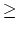

Let a1, a2,..., an be n relatively prime positive integers. A positive integer k has a representation by a1, a2,..., an if there exist non-negative integers x1, x2,..., xn such that k = x1a1 + x2a2 + ... + xnan. The linear Diophantine problem of Frobenius is to determine the largest integer g(a1, a2,..., an) with no such representation.
The linear Diophantine problem of Frobenius has very practical application. It is equivalent to the problem of coin exchange. Given sufficient supply of coins of denominations a1, a2,..., an, determine the largest amount which cannot be formed by means of these coins.
Mathematical problems, such as this, are usually difficult to solve. We shall consider a simple case in which n = 2. In addition to g(a1, a2), we shall also want to find n(a1, a2) the number of positive integers that cannot be represented by a1 and a2.
Write a program to compute g(a1, a2) and n(a1, a2). The following theorem may help you in designing your program.
Theorem: A positive number k = qa1 + r, 0 < r < a1, can be represented by a1, a2,..., an if and only if ktr, where tr is the smallest positive integer which has the same residue r modulo a1 and can be represented by a2, a3,..., an.
The input file will consist of one or more cases. Each case contains two positive integers a1 and a2 in a line. The product of a1 and a2 is less than 232. A line containing two zeros follows the last case, and terminates the input file.
For each case a1 and a2 in the input file, the output file should contain a line with two numbers g(a1, a2) and n(a1, a2) separated by a blank.
3 5 23 20 0 0
7 4 417 209